Local image generation,
minus the busywork.
Image Bench cuts the corners of the standard Stable Diffusion WebUI workflows. Batches, model comparisons, picking the best images, upscales and edits all happen in one window built around your images, and the whole process gets an order of magnitude more fun.
Twelve tabs, one window.
Image Bench is the window you work in. It runs Forge Neo or ComfyUI in the background, in a tab of its own, and drives it for you. Click through the tabs.
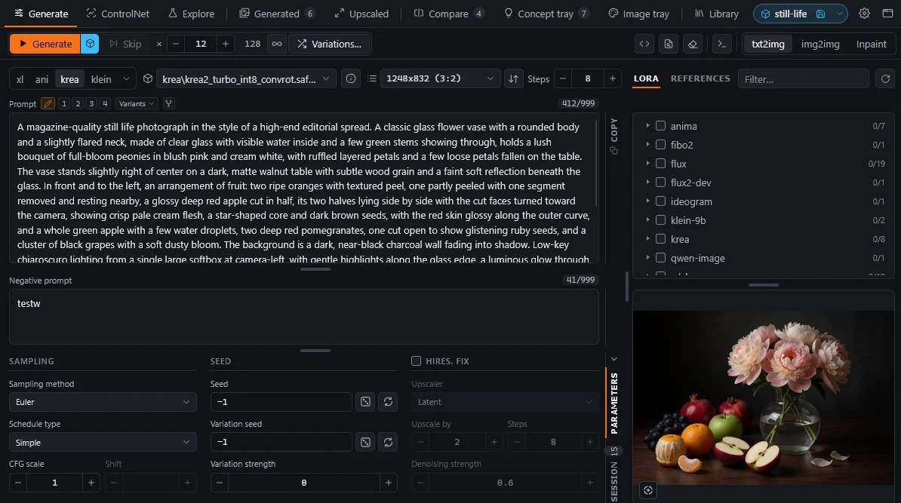
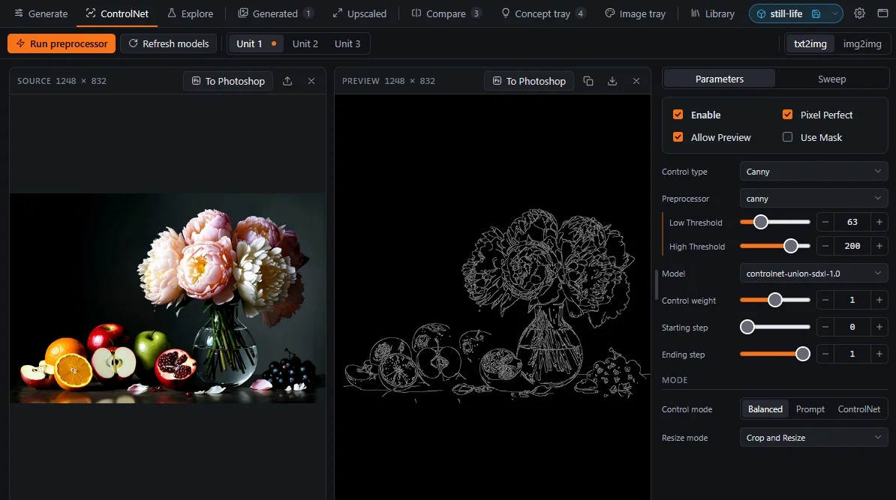
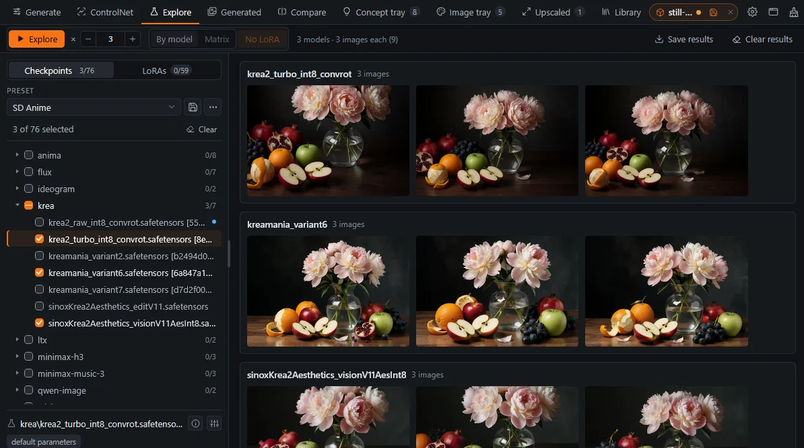
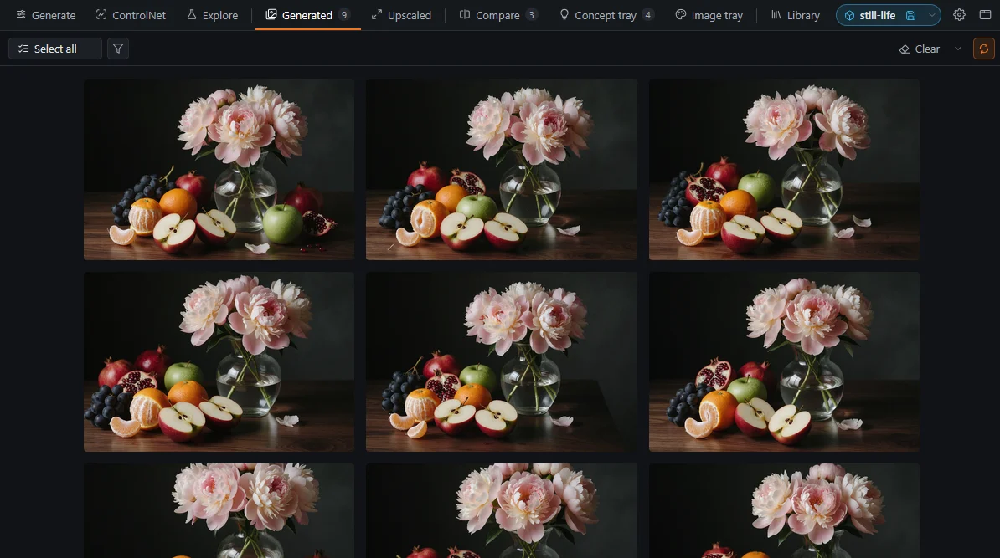
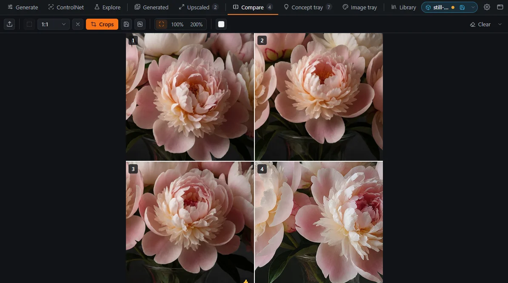
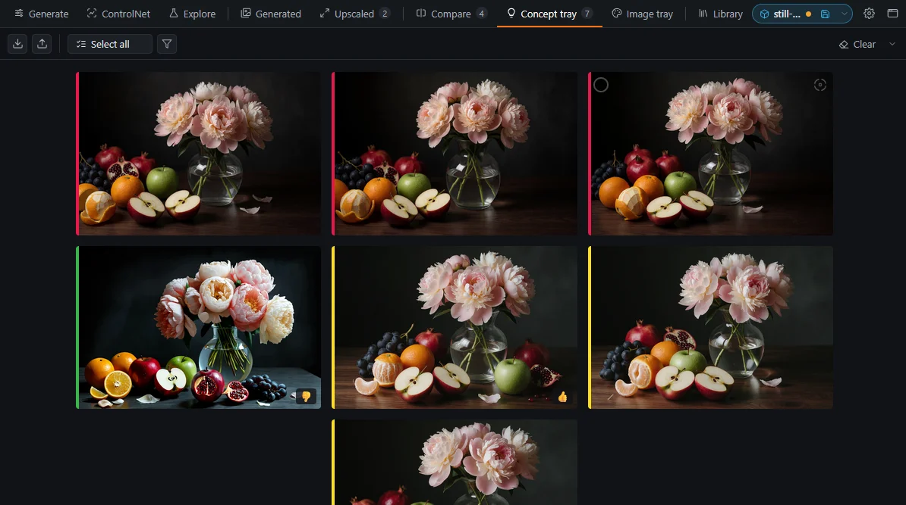
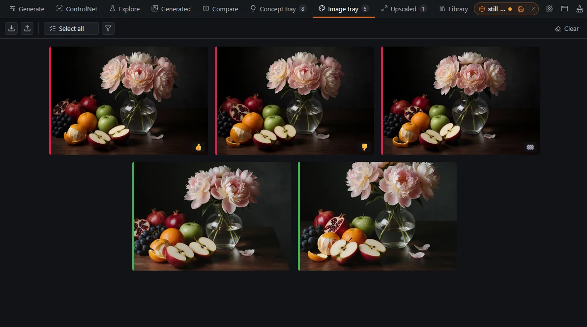
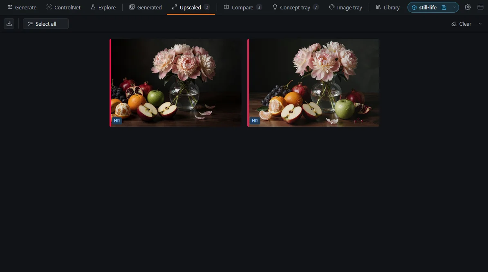
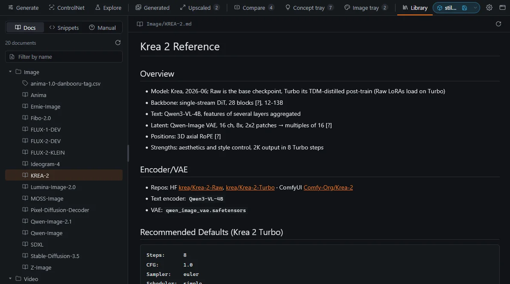
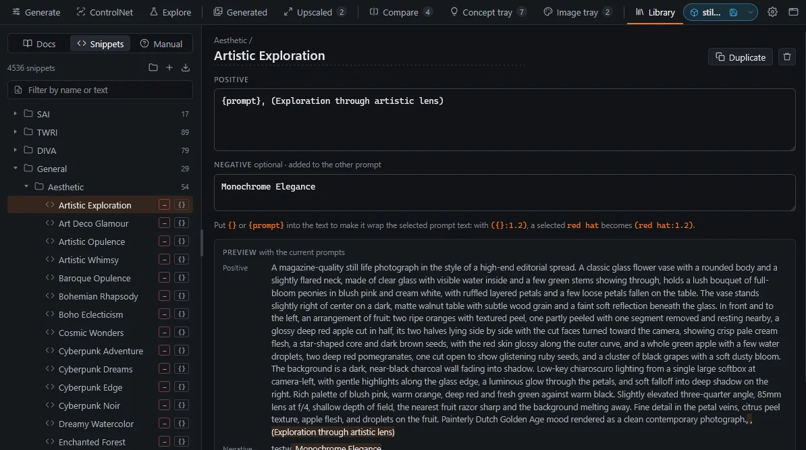
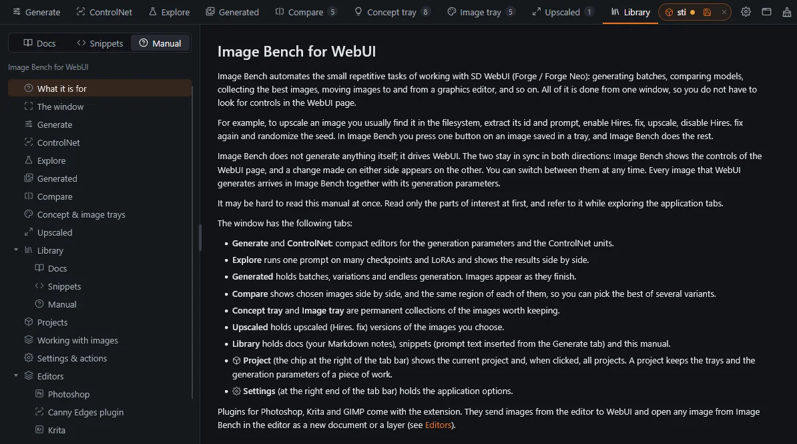

The controls you touch most, in one compact screen and synced both ways with Forge Neo or ComfyUI: prompt, model, LoRAs, sampling, size and Hires. fix. Switch between txt2img, img2img and Inpaint, and follow a batch on the session filmstrip.
One gallery, two trays and a ring of actions.
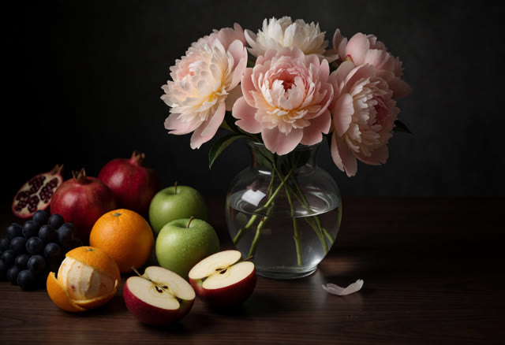
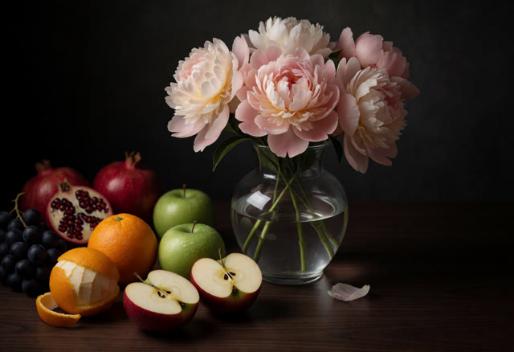
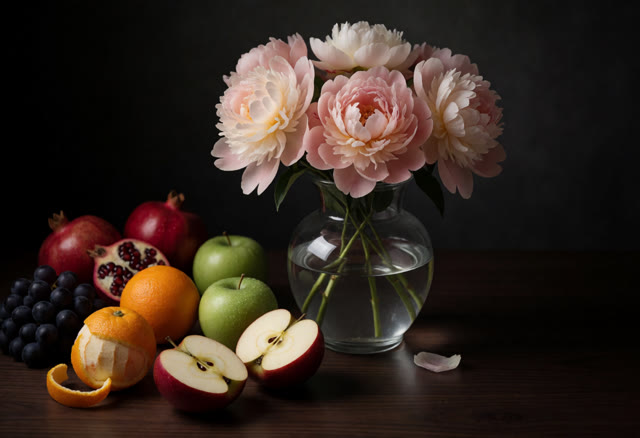
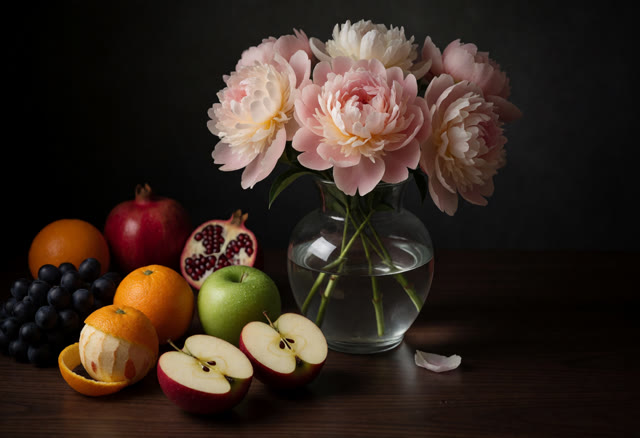
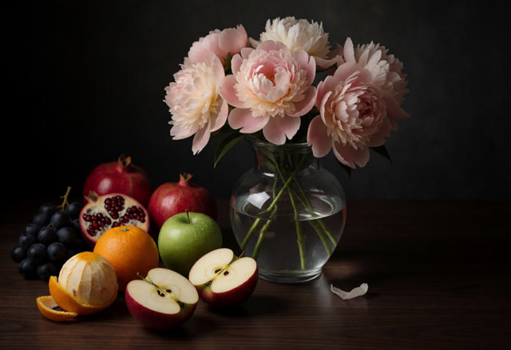
The Generated tab
Every image you generate lands here, grouped by batch, with its prompt, seed and model attached. Explorations and upscales get tabs of their own, and every image remembers how it was made. While a batch runs, a filmstrip in the Generate tab follows it too.
The trays
Drag the ones that matter into the Concept tray or the Image tray. Trays persist, take color markings and comments, and are saved with your project.
The action rim
Hold Ctrl over any image and a ring of actions opens around it. Reuse its parameters, upscale it, send it to img2img, ControlNet or your editor. One gesture, every action.
No file manager. No clipboard.
Upscaling one image.
Now multiply by every image you keep.
Six steps → one key.
- 01Find the image in the file system
- 02Copy its seed and prompt back into the UI
- 03Enable Hires. fix
- 04Generate
- 05Disable Hires. fix
- 06Randomize the seed again
Press U pointing to the image in a tray.
Or click Upscale on its action rim. Seed, prompt and Hires. fix are handled for you, and the result lands in the Upscaled tab.
Provide a list of step counts and the image is rerun at each, same seed and prompt, to see where more steps stop paying off.
Upscale it at several denoising strengths in one go and keep the one that adds detail without redrawing the image.
Compare your prompt with the ones before it.
The Generate tab remembers the last 20 prompts you generated with. Each of them gets a numbered button above the prompt field. Click a number to see that prompt as a diff against the one you have now: removed text is struck through, added text is highlighted.
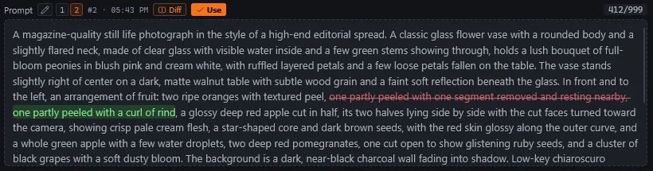
Generate as usual. Each generation adds its prompt and negative prompt to the list. If you generate with a pair that is already anywhere in the list, that entry moves back to the front.
Read the changes by phrase. Prompts are split at commas and line breaks, and phrases are matched with their weights ignored. A phrase you reworded is compared word by word.
Go back with the Use button. It copies the selected prompts back into their fields. The list is saved with your project and comes back when you open it.
Fork the prompts worth keeping. Older prompts drop off the list. The fork button next to Diff saves the selected one as a named variant, which stays until you remove it. Variants are compared and used just like history entries.
Built for precision. Your editor draws the masks.
Image Bench has no inpainting brush, on purpose. Masks come only from a real graphics editor: make a selection in Photoshop, Krita or GIMP and send it. The image, mask or reference goes straight into Forge Neo or ComfyUI, and the result comes back as a new layer.
This needs the Image Bench plugin for your editor. Download it from the built-in manual (Library › Manual › Editors) and install it in Photoshop, Krita or GIMP.
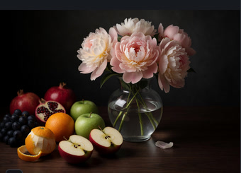
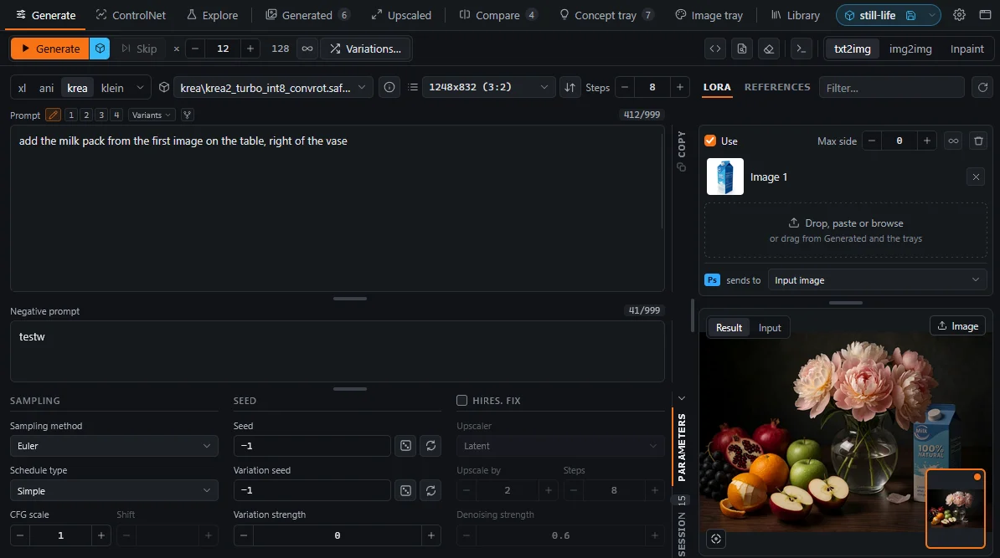
Selections become masks
Feather and refine with real tools, at full resolution, and send the selection as the inpaint mask.
Any target
Send to the input image, a reference, a ControlNet unit (preprocessed or as is) or the Compare tab.
Back as layers
Send to Photoshop, Krita or GIMP from any image. Results arrive as layers, ready to blend.
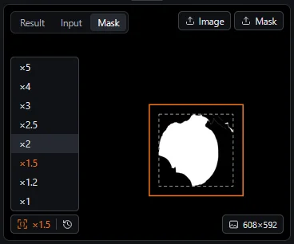
Keep the aspect ratio of the inpainting area.
Inpainting with Only masked doesn't regenerate the whole image. The model works on a crop around the mask, enlarged to the generation size, and the result is scaled back into place. If that size has a different shape than the crop, the area you inpaint may end up distorted.
The factor button in the Mask pane sets the generation size from the bounding box of your selection, so the working image has the same aspect ratio as the area around the mask. You only pick how much to enlarge it during the inpainting: at ×1.5, a 400-pixel selection is generated at 600 pixels, rounded to a multiple of 16. In the pane, the dashed box is the mask and the orange one is the padded area that gets regenerated.
One region, every image.
Draw a region once and it applies to every image in the Compare tab. Zoom and pan stay in sync, even across different resolutions. The crops line up in a grid you can reorder and export as one PNG, so you can tell two samplers or ten LoRA weights apart at a glance.
Save the workspace. Pick it up next week.
A project is a folder that keeps everything an image took: the trays, the generation parameters, the ControlNet inputs, the prompt history and the final image. Save it when you stop, open it when you come back, and the bench is set up as you left it.
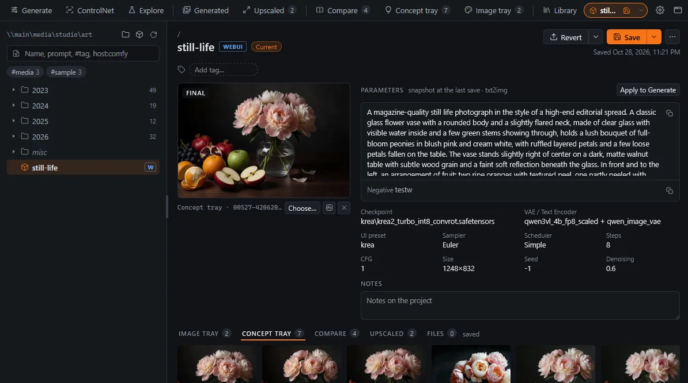
Keep projects in folders. Any folder under your project root, on a local disk or a network share. Find projects by name, prompt, #tag or host.
Everything in one place. The final image, a snapshot of the parameters, notes, and the image tray, concept tray and Compare images. Apply to Generate brings only the parameters back.
Save when you are done. The project chip in the tab bar shows the open project and its unsaved changes. You can restore parameters or trays only without opening a project first, or merge tray contents to the existing project.
Drive your ComfyUI workflow from the Generate tab.
Image Bench works with the workflow you have open in ComfyUI. It finds the nodes it needs, sets their widgets and queues the workflow, the same way you would by hand. Where the graph has several candidates for a role, a marker in the node title tells it which one to use.
Works without markers
A plain txt2img workflow needs no setup. Image Bench uses the first KSampler and the first two text encoders in the graph, then follows the sampler's inputs to the seed, steps, CFG, sampler, schedule and size. This works in KSampler and SamplerCustomAdvanced graphs, and the search passes through Reroutes and subgraphs.
When you need markers
With two samplers or several Load Image nodes in a graph, Image Bench can't tell them apart, so you add a marker such as ib:smp:1 or ib:ref:0 to the node title. The checkpoint list, Hires. fix, img2img and inpaint, references, ControlNet units and LoRA exploration always need their marker. If the workflow has no node for a control, the Generate tab hides that control.
Your graph stays as you built it
Image Bench changes the widget values you would change by hand. It doesn't add nodes or rewire links. Support for a custom loader or sampler goes into node_config.json, and the extension ships example workflows with every node already marked.
Made for a small second screen.
Image Bench fits its whole UI into 1200×800. Put it on a small display above your main monitor and give the big screen to your graphics editor. Generate, pick and send images up there, and paint down here.
Two minutes to set up.
Install from URL
- In Forge Neo, open Extensions › Install from URL.
- Paste the repository URL:
https://github.com/GChristensen/sd-webui-image-bench- Press Install, then Extensions › Installed › Apply and restart UI.
Updates come through Extensions › Installed › Check for updates.
Manual clone
Clone it into the extensions folder of Forge Neo and restart it.
$ cd <forge-neo>/extensions $ git clone https://github.com/GChristensen/sd-webui-image-bench
Update later with git pull in the extension folder. Your settings, trays and presets live in store/ and survive updates.
Install via Git URL
- In ComfyUI, open Manager › Install via Git URL.
- Paste the repository URL:
https://github.com/GChristensen/comfyui-image-bench- Restart ComfyUI. It loads extensions and the Image Bench Prompt node at startup.
Manager accepts Git URLs with allow_git_url_install = true in its config.ini.
Manual clone
Clone it into the custom_nodes folder of ComfyUI and restart it.
$ cd <ComfyUI>/custom_nodes $ git clone https://github.com/GChristensen/comfyui-image-bench
Update later with git pull in the extension folder. Your settings, trays and presets live in store/ and survive updates.
Then open it with the 🔬 Image Bench button, or go straight to http://<host>/image-bench/app. The full manual is built in under Library › Manual.
See it in action.
Image generation, use of ControlNet, model exploration, image comparison, inpainting, editing — and the window never switches.
Still an experiment.
Image Bench is a work in progress. Features change, the hosts it drives change under it, and things will break now and then. Try it, keep your projects backed up, and stick to the backend version that still works.